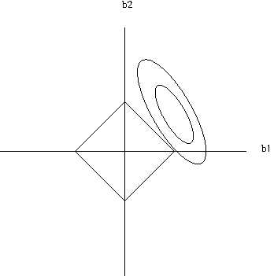

In the previous chapter, we introduced the norm of a vector. In many data science applications, solutions with smaller norms may be more accurate. This point is explored here.
10.1 Classic View of Shrinkage Estimators: Multicollinearity
The notion of multicollinearity was the original motivation for shrinkage estimators. It refers to settings in which the following concerns arise:
One column of the matrix \(A\) in Equation 5.6 is nearly equal to some linear combination of the others.
Thus \(A\) is nearly not of full rank.
Thus \(A'A\) is nearly not of full rank.
Thus \(\widehat{\beta}\) is unstable, in the form of high variance.
That latter point is often quantified by the Variance Inflation Factor. To motivate it, consider the “R-squared” value from linear regression analyis, which is the squared correlation between true “Y” and predicted “Y”. Let \(R^2_j\) denote that measure in the case of predicting column \(j\) of \(A\) from the other columns. The quantity
\[
VIF_j = \frac{1}{1-R^2_j}
\]
then measures negative impact due to multicollinearity on estimating \(\widehat{\beta}\). The intuition is that if, say, column 3 of \(A\) can be predicted well using a linear model, then that column is approximately equal to a linear combination of the other “X” columns. This is worrisome in light of the problems described above.
Needless to say, the word “nearly” above, e.g. in “nearly not of full rank,” is vague, and leaves open the question of “What can we do about it?” We will present several answers to these questions in this and the succeeding chapters.
10.2 Example: Million Song Dataset
Let’s consider the Million Song Dataset, varous versions of which are on the Web.
Ours is a 50,000-line subset of the one with 515345 rows and 91 columns. The first column is the year of release, followed by 90 columns of various audio measurements. The goal is to predict the year, V1, from the audio variables V2 through V91.
The function regclass::VIF will compute the VIF values for us.
As a rough guide, values of VIF about 5.0 are considered concerning by many analysts. Under that criterion, variables V5, V7, V17 and so on look troublesome.
What can be done? One simple approach would be to delete those columns from the dataset. This is indeed is a common solution, but another is ridge regression, which we present next.
10.3 Ridge Regression
In seminal paper, Hoerl and Kennard presented a new approach to the problem of multicollinearity of predictor variables in a linear model.
Technometrics, February 1970
10.3.1 The ridge solution
Their solution is simple; Add some quantity to the diagonal of \(A'A\). Specifically, Equation 5.6 now becomes
where 0 means \(p\) 0s. In essence, we are adding artificial data here, consisting of \(p\) new rows to \(A\), and \(p\) new elements to \(S\). So Equation 10.1 is just the result of applying Equation 5.6 to \(A_{new}\) and \(S_{new}\).
Loosely speaking, we can think of the addition of \(\lambda I\) to \(A'A\) as making the latter “larger”, and thus making its inverse smaller. In other words, we are “shrinking” \(\widehat{\beta}\) towards 0. This effect is made even stronger by the fact that we added 0s data to \(S\). This will be made more precise below.
10.3.3 Example: Million Song dataset
We will use glmnet, one of the most widely-used R packages.
We had earlier flagged variable \(V5\) as causing multicollinearity. As noted then, we could simply exclude it, but here under ridge, we see that it has been assigned a very small regression coefficient compared to most others.
bhOLS <-coef(lm(V1 ~ .,s50)) # OLS means Ordinary Least Squaresl2norm(bhOLS)
[1] 1951.028
No, the vector got larger!
The culprit is the intercept term, \(\widehat{\beta}_0\):
bh01[1]
[1] 1952.611
bhOLS[1]
(Intercept)
1951.028
l2norm(bh01[-1])
[1] 0.9080075
l2norm(bhOLS[-1])
[1] 0.9451025
The rest of the vector did shrink (though not necessily element-by-element).
Actually, we should have centered and scaled “X” before applying ridge, since the predictors are of such different magnitudes. This also makes the intercept 0.
So, how do we choose \(\lambda\)? We need to note a very important principle first.
10.5 P-hacking, Both in Hypothesis Testing and Generally
“In a set of 10,000 randomly typing monkeys, one of them will accidentally type a Shakespearian sonnet.”
Some readers have heard this before in the context of p-hacking, in which an analyst poses a large collection of research questions, and runs a statistical hypothesis test on each of them. Even if the null hypothesis is true for all of them, each will have a 5% chance of being rejected, and since there are many, the chance that at least one will be rejected and declared “significant,” even if \(H_0\) is true.
One should not be doing hypothesis tests in the first place. See these notes.
This problem arises in many, many Data Science contexts, and a good analyst must be vigilant to recognize the potential to mislead. In our context here, if we look at many values of \(\lambda\), one of them may by accident look very promising, e.g. result in very good prediction accuracy on our training set yet actually overfit.
10.6 Cross-validation
A common way to choose among models is cross-validation: We set aside a subset of the data, known as the holdout or test set, for use in testing predictive accuracy. The remaining data is the training set. For each of our competing models – in this case, competing values of \(\lambda\) – we fit the model on the training set, then use the result to predict the test set. We then use whichever model – again, in this case whichever value of \(\lambda\) – does best in the test set.
The test set serves as “fresh data,” simulating how our fitted model might do in the real world (assuming our data is representative of the real world). Predicting on the training set is not as good, since our fit was by design tailored to that data.
We still run the risk of p-hacking, but cross-validation works well as long as we keep the problem in mind. This topic will come up in future chapters as well.
10.7 Example: Million Song Data
>library(glmnet)> glmOut <-cv.glmnet(x=as.matrix(s50[,-1]),y=s50$V1,alpha=0)> glmOut Lambda Index Measure SE Nonzeromin 0.247410089.440.9201901se 0.99878590.280.982390
The \(\lambda\) value that gave the smallest Mean Squared Prediction Error (MSE) was 0.2474. (Coincidentally, it was also the smallest value that the function tried; see \(\textbf{glmOut\$lambda}\).)
A more conservative value of \(\lambda\) was 0.9987, the largest \(\lambda\) giving MSE within one standard error of the minimum; it’s conservative in the sense of being less likely to overfit (p-hacking); its MSE value, 90.28, was only slightly larger than the best one. In each case, all 90 predictors had nonzero coefficient estimates.
We can then predict as usual. Say we have a song similar to that in s50[1,], but with V2 equal to 25.0.
z <- s50[1,-1] # exclude Yz[1,1] <-25.0predict(glmOut,z)
s0
[1,] 2003.235
The year of release is predicted to be 2003.
10.8 Modern View of Shrinkage Estimators
There are many ways to deal with multicollinearity other than shrinkage, and indeed, these days one seldom hears mention of multicollinearity in discussions of shrinkage. Instead, the goal is dimension reduction, meaning to reduce the complexity of a model in order to avoid overfitting; the LASSO, introduced below, does this explicitly, while ridge accomplishes it via pure size reduction.
We will discuss this further in Section 10.11, but one more point about the discussion no longer being motivated explicitly by multicollinearity: One can apply ridge to situations of exact dependence among the columns of X, as opposed to the original motivation of dealing with approximate linear dependence. in which there is exact linear dependence.
We saw such a setting in Section 6.1. There we deliberately induced exact linear dependence by inclusion of both male and female dummy variables. Let’s apply ridge:
[,1]
age 496.6716
wkswrkd 1372.7052
man -18677.8751
woman -29378.3086
The results essentially are the same as what we obtained by having only one dummy, thus no linear dependence: Men still enjoy about an $11,000 advantage. But ridge allowed us to avoid deleting one of our dummies. Such deletion is easy in this case, but for large \(p\), say in the hundreds or even more, some analysts prefer the convenience of ridge.
10.9 Formalizing the Notion of Shrinkage
How in the world did statisticians develop an interest in shrinking estimators? A watershed event occurred in the early 1980s, when the statistical world was shocked by research by James and Stein that found, in short, that:
Say \(W\) has \(q\)-dimensional normal distribution with mean vector \(\mu\) and independent components having variance \(\sigma^2\), each. We have a random sample of size \(n\), i.e. \(n\) independent observations on \(W\). Then if \(q \geq 3\), in terms of Mean Squared Estimation Error, the best estimator of \(\mu\) is NOT the sample mean \(\bar{W}\). Instead, it’s a shrunken version of \(\bar{W}\),
The quantity within the parentheses is typically smaller than 1, giving us the shrinkage property. Note, though, that with larger \(n\), the amount of shrinkage is minor.
In the case of linear regression, a version of shrinkage works there too, with \(q\) being the number of columns in the \(A\) matrix.
So, let’s view the issue of shrinkage more formally, first for ridge and later for the LASSO.
10.9.1 Shrinkage through length penalization
Say instead of minimizing Equation 5.3, we minimize
\[
(S - Ab)'(S - Ab) + \lambda ||b||^2
\tag{10.3}\]
We say that we penalize large values of \(b\), an indirect way of pursuing shrinkage. Now take the derivative and set to 0:
\[
0 = A'(S-Ab) + \lambda b
\tag{10.4}\]
i.e.
\[
(A'A + \lambda I) b = A'S
\]
and thus
\[
\widehat{\beta} = (A'A+\lambda I)^{-1} A'S
\]
It’s ridge! Exactly what we had in Equation 10.1. So ridge, originally motivated by “almost singular” settings, also turns out to be justified as a shrinkage estimator..
10.9.2 Shrinkage through length limitation
Instead of penalizing \(||b||\), we could simply constrain it, i.e. we could set our optimization problem to:
minimize \((S-Ab)'(S-Ab)\), subject to the constraint \(||b||^2 \leq \gamma\)
We say that this new formulation is the dual of the first one. One can show that they are typically equivalent.
10.10 The LASSO
The LASSO (Least Absolute Shrinkage and Selection Operator) was developed by Robert Tibshirani in 1996, following earlier work by Leo Breiman. It takes \(\widehat{\beta}\) to be the value of \(b\) that minimizes
\[
(S - Ab)'(S - Ab) + \lambda ||b||_1
\tag{10.5}\]
where the “l1 norm” is
\[
||b|| = \sum_{i=1}^p |b_i|
\]
We will write our original norm as \(||b||_2\).
This is a seemingly minor change, but with important implications. What Breiman and Tibshirani were trying to do was to obtain a sparse\(\widehat{\beta}\) , i.e. a solution with lots of 0s, thereby providing a method for predictor variable selection. This is important because so-called “parsimonious” prediction models are desirable.
10.10.1 Properties
To that end, as noted above, it can be shown that, under some technical conditions, that the ridge solution minimizes
\[
(S - Ab)'(S - Ab)
\]
subject to the constraint
\[
||b||_2 \leq \gamma
\]
while in the LASSO case the constraint is
\[
||b||_1 \leq \gamma
\]
As with \(\lambda\) in the original formulation, \(\gamma\) is a positive number chosen by the analyst.
10.11 Ridge vs. LASSO for Dimension Reduction
Today’s large datasets being so common, we need a way to “cut things down to size,” i.e. dimension reduction, aimed at reducing the number of predictor variables. This is done both for the sake of simplicity and to avoid overfitting, in which fitting an overly complex model can reduce predictive power.
10.11.1 Geometric view
Comparison between the ridge and LASSO concepts is often done via this graph depicting the LASSO setting:

LASSO sparsity
Here \(p = 2\), with \(b = (b_1,b_2)'\). The horizontal and vertical axes represent \(b_1\) and \(b_2\). Which point in the graph will be the LASSO solution? Reason as follows.
The constraint \(||b||_1 \leq \gamma\) then takes the form of a diamond, with corners at \((\gamma,0)\), \((0,\gamma)\), \((-\gamma,0)\) and \((0,-\gamma)\). The constraint \(||b||_1 \leq \gamma\) requires us to choose a point \(b\) somewhere in the diamond, including the boundary.
The concentric ellipses depict the values of \(c(b) = (S - Ab)'(S -
Ab)\), as follows.
Consider one particular value of \(c(b)\), say 1.68.
Many different points \(b\) in the graph will have \(c(b) = 1.68\); in fact, the locus of all such points is an ellipse.
There is one ellipse for each possible value of \(c(b)\). So, there are infinitely many ellipses, though only two are shown here.
Larger values of \(c(b)\) yield larger ellipses.
By the way, the common center of these ellipses is the ordinary (i.e. non-shrunken) least squares (OLS) solution \(b_{OLS}\), and the smallest ellipse has c(b) equal to the OLS sum of squares.
On the one hand, we want to choose a \(b\) for which \(c(b)\) – our total squared prediction error – is small, thus a smaller ellipse.
But on the other hand, we need at least one point on the ellipse to be in common with the diamond.
The solution is then a point \(b\) in which the ellipse just barely touches the diamond.
Picture in your mind an ellipse, say the inner one in the graph, growing larger and larger, while retaining the same center and orientation, until it hits the diamond. That is the outer ellipse, which indeed hits the diamond at one of the corners.
Note that each of the four corners of the diamond represents a sparse solution. For instance, the point \((0,\gamma)\) has \(b_2 = 0\).
Then picture other ellipses, at other centers with other orientations, and go through the same process in your mind’s eye. You will see that typically the solution turns out to be one of the corners. Again, this is important because it gives us a sparse solution.
Of course, we are in just two dimensions here. With \(p = 10\) predictor variables, the graph would be in 10 dimensions, beyond our human ability to picture. But we still would have a diamond in that space, with \(2p\) corners etc.
10.11.2 Implication for dimension reduction.
The key point is that that “barely touching” point will be one of the four corners of the diamond, points at which either \(b_1 = 0\) or \(b_2 = 0\) – hence a sparse solution, meaning one in which many/most of the coefficients in the fitted model will be 0. This achieves the goal of dimension reduction.
Ridge will not produce a sparse solution. The diamond would now be a circle (not shown). The “barely touching point” will almost certainly will be at a place in which both \(b_1\) and \(b_2\) are nonzero. Hence no sparsity.
10.11.3 Avoidance of overfitting without dimension reduction
As we’ve seen, both ridge and LASSO reduce the size of the \(\widehat{\beta}\) vector of estimated coefficients. Smaller quantities have smaller statistical variances, hence a guard against overfitting. So, ridge can be employed as an approach to the overfitting problem, even though it does not provide a sparse solution.
Moreover, in some settings, it may be desirable to keep all predictors, as seen in the next section.
10.12 Example: NYC Taxi Data
The purpose of this data is to predict trip time in the New York City taxi system. The \(\textbf{qeML}\) package includes a 10,000-row subset.
If we fit, say, a linear model, \(\textbf{lm}\) will form a dummy variable for each of the pickup and dropoff locations. Thus we will have \(p =
1+143+205+1 = 350\). An old rule of thumb says that if we have \(p\) predictors and \(n\) data points, we should keep \(p < \sqrt{n}\) to avoid overfitting. As we will see in a later chapter, these days that rule is being questioned, but it is still useful. Since here we have \(\sqrt{n} = 100\), there is a strong suggestion that we do some dimension reduction.
The problem would be even worse if we add pickup/dropoff location interaction variables, basically products of the pickup and dropoff dummy variables.
Thus we either should delete some of the pickup and dropoff variables, or use all of them but temper the fit using ridge. The latter may be more attractive, as riders would like a time estimate for their particular pickup and dropoff locations.
Call: cv.glmnet(x = nycwide, y = nyctaxi[, 1], alpha = 0)
Measure: Mean-Squared Error
Lambda Index Measure SE Nonzero
min 0.3002 100 2.941 0.162 356
1se 1.0063 87 3.101 0.190 356
The best \(\lambda\) value was found to be 0.3002. But as noted above, we might use the more conservative value, 1.0063, to try to avoid p-hacking.
10.13 Iterative Calculation
An advantage of ridge over LASSO and other l1 shrinkage estimators is that the former has an explicit (we say closed-form) solution, which is not the case for the LASSO. In fact, as will be seen often in this book, many algorithms in statistics/machine learning lack closed-form solutions, in which case one must resort to iterative computation.
These means we make a series of guesses as the to value of the desired quantity, hopefully each more accurate than the last, eventually settling on a final guess.
This may or may not work well. Here are some of the major issues/perils:
initial guess
updating method
learning rate
convergence
presence or lack of calculus derivatives
The basic idea is to first (somehow) make some guess as to the value of the desired quantity, say \(\widehat{\beta}\) in the LASSO. The algorithm crunches this to make a new, updated guess, hopefully one that is more accurate than the first. One then updates the new guess, continuing this process until, hopefully, it converges, meaning that it no longer changes much from one iteration to the next. The current guess is then deemed to be the correct value.
The case of computation of the LASSO is further complicated by its being based on the \(l_1\) norm, which in turn uses absolute values, i.e. \(|x|\). These have no derivative in the calculus sense, say as used in Equation 10.4 for ridge. This is a problem because many iterative methods are based on derivatives, as follows.
Say we have a function \(f\) whose root \(r\) is of interest to us. We might make a series of guesses for \(r\) by considering the derivative \(f'\). This is illustrated in the figure below. Unknown to us, \(r = 2\). Our current guess is \(x = 3\). We draw \(f'\), i.e. the tangent line to the curve at our current guess, and temporarily pretend that the line is the curve. We thus compute the root for the line, which is seen here to be near 2.0, and then take this tangent root as our updated guess for the root of the curve.
Our quest for a root may arise for instance in a minimization problem, where we set a derivative to 0 and solve for that root.
root hunting
Some machine learning algorithm have a parameter called the learning rate, which is motivated by a concern that the process may overshoot the root, or converge to the wrong root. . A smaller learning rate value directs the algorithm to take smaller steps in generating new guesses. In this case, we might go only partway to the tangent root. On the one hand, this can slow the computation but on the other, we may be less likely to overshoot the true value. On the other hand, if we are concerned about settling on the wrong root, we might set a large value for the learning rate.
Again, the desired root may arise in a minimum/maximum problem. There could be many local mimima/maxima, which we use to avoid.
At any rate, if the quantity \(f\) that we are working with does not have a derivative, our work is extra difficult.
At first one may think that such internal details of computation need not concern the end user of the software. But the fact is that often an algorithm will fail to converge, and the user will need to get more directly involved, say in trying a different value for the initial guess.
So, if say glmnet fails to converge, what can be done? For example, in glmnet, the argument thresh defines what we meant by our phrasing “no longer changes much”; we can decrease or even increase that value. One can make sure to center and scale the X data. Tweaking other parameters may help as well, such as changing the updating method. (In fitting neural network models, there are actually many different methods to choose from.) But in the end, there are no magic solutions. It may well be that one’s basic model is flawed.
10.14 The Kernel Trick and Kernel Ridge Regression
How about do you see a named trick in a math book? Well, there is indeed one here, one that is of great practical value.
10.14.1 Polynomial Regression
The world is not linear, not even approximately so. Thus early in the development of statistics, analysts started using polynomial models. To predict human weight from height, for instance, one might fit the model
The key point is that this is still a linear model. Though it is a nonlinear function of height, it is linear in the \(\beta_i\). If say, we multiple all the \(\beta_i\) by 2, the value of the above expression is doubled. In Equation 5.2, we now would tack on a column consisting of the \(V_i^2\), but \(E(C|V)\) would still be a linear expression in \(\beta\):
Nice, but the size of our model grows rapidly. Say we predict weight from not only height but also age. Then our matrix \(A\) will have columns not only for height and height-squared, but also age and age-squared, as well as height times age. In my machine learning book , there is an example in which \(A\) originally had 54 columns, but with a polynomial model of degree 2, the number of columns grew to 1,564!
N. Matloff, The Art of Machine Learning, NSP, 2023
This is especially problematic in the case \(p > n\), which is increasingly common these days, and motivates the following material.
10.14.2 The Kernel Trick
We will first introduce a computational shortcut, and then the Kernel Trick itself. Our context will be ridge regression.
Using some algebraic manipulation, Equation 10.1 can be shown to be equivalent to
\[
\widehat{\beta} = A' (AA' + \lambda I)^{-1} S
\]
Note that the product \(AA'\) will be \(n \times n\), as opposed to our original \(p \times p\) product \(A'A\). With \(p > n\), this change means a large saving in memory storage space and computation time.
But we reap even larger benefit by looking at fitted or predicted values. Let \(x_{new}\) be a matrix of “X” values at which we wish to predict “Y,” in the same format as \(X\). Then the fitted/predicted values are
What is so special about this expression, or more specifically, the two bracketed expressions? The answer is that every major computation here is a “dot product:
In \(x_{new} A'\), we are taking dot products of rows of \(x_{new}\) and columns of \(A'\).
In \(AA'\), we are taking dot products of rows of \(A\) and columns of \(A'\).
The idea of the Kernel Trick is to replace dot products by kernel computations. In computing \(AA'\), for example, denote row \(i\) of \(A\) by \(a_i\). Then we replace the expression for the row \(i\), column \(j\) element of \(AA'\),
\[
a_i' a_j
\tag{10.6}\]
by
\[
k(a_i,a_j)
\]
Here \(k\) is a kernel function satisfying
\(k\) is a symmetric function in its arguments, and
\(k\) is nonnegative definite.
The latter is a generalization of nonnegative definite matrices. If we have a set of vectors \(u_1,...,u_r\) and form the matrix having its row \(i\), column \(j\) value equal to \(k(u_i,u_j)\), then the matrix is required to nonnegative positive definite.
What does that give us? Suppose we wish to do polynomial regression of degree 2. As noted above, we could add the appropriate columns to the \(A\) matrix, thus applying the transformation (e.g. for the case \(p = 2\)),
\[
x \rightarrow \phi(x) = (x_1,x_1^2,x_2,x_2^2,x_1 x_2)
\tag{10.7}\]
We say that \(\phi\)lifts us from our ambient space (i.e. original space, dimension \(p\)) to a desired higher-dimensional space, the latent space.
But again, this would increase the dimensionality, going from 2 to 5 in this \(p = 2\) case, but the main point for now is that we still would be computing dot products. For instance, the new value of Equation 10.6 would now be
\[
\phi(a_i)' \phi(a_j)
\]
The Kernel Trick involves finding a kernel \(k\) for which
\[
k(u,v) = \phi(u)' \phi(v)
\]
It turns out that such a kernel is
\[
k(u,v) = (c + u'v)^d
\tag{10.8}\]
for polynomials of degree \(d\).
In other words:
The Kernel Trick enables us to stay in the ambient space yet still achieve the nonlinearity of the lifted space.
In fact, although it turns out that Equation 10.8 corresponds to
not only do we avoid computing \(\phi(t)\), we don’t even need to know its form.
Note again that all this worked only because our quantities of interest here consist of dot products.
10.14.3 Kernel Ridge Regression: the Code
# kernel ridge regression# fits 'data' with KRR, ridge parameter 'lamb' and kernel 'kern', and# then predicts "Y" from 'newX'krr <-function(data,yName,lamb,kern,newX){if (!allNumeric(data)) stop("'data' must be all numeric") ycol <-which(names(data) == yName) data <-as.matrix(data) x <- data[,-ycol,drop=FALSE] x <-cbind(1,x) n <-nrow(x) p <-ncol(x) newX <-as.matrix(newX)if (ncol(newX) ==1) newX <-t(newX) newX <-cbind(1,newX) part1 <-kernAB(newX,t(x),kern) part2 <-kernAB(x,t(x),kern) part2 <-solve(part2 + lamb *diag(n)) %*% y predsKRR <- part1 %*% part2return(cbind(predsKRR))}# finds the matrix product ab, but with the kernel k evaluated at each# entrykernAB <-function(a,b,k){ ab <-matrix(nrow=nrow(a),ncol=ncol(b))for (i in1:nrow(a)) { arow <- a[i,]for (j in1:ncol(b)) { ab[i,j] <-k(arow,b[,j]) } } ab}
10.15 A Warning
Many statistical quantities now have regularized, i.e. shrunken versions. It is also standard practice in neural networks. This may be quite helpful in prediction contexts. However, note the following:
No Statistical Inference on Shrinkage Estimators
Shrinkage produces a bias, of unknown size. Thus classical statistical inference (confidence intervals, hypothesis tests), e.g. those based on Equation 5.9 for linear models, is not possible.
10.16 Your Turn
❄️ Your Turn: Show that \(A_{new}\) in Section 10.3.2 is of full rank, \(p\).
❄️ Your Turn: In Section 10.12, it was pointed out that in some settings we may prefer to retain all of our predictor variables, rather than do dimension reduction, thus preferring ridge to LASSO. But we might pay a price for that preference, in that the LASSO may actually give us better predictive power. Write an R function to investigate this, with call form
compareRidgeLASSO(data,yName)
where data and yName are in the format of the predictive \(qeML\) functions, and the minimum Mean Squared Prediction Error is returned for both algorithms. Try your function on some of our datasets, or others.
❄️ Your Turn: The LASSO will tend to produce solutions with lesser sparsity if the dataset is large. Write an R function to illustrate this, with call form
where: where data and yName are in the format of the predictive \(qeML\) functions; the LASSO is applied to n randomly chosen rows of data; and nReps is the number of replicates to run at each value of n. The function will compute the number of nonzero elements in the \(\widehat{\beta}\) chosen by cross-validation in cv.glmnet. Try your code on a few datasets.
❄️ Your Turn: Consider a generalization of ridge regression, in which we find